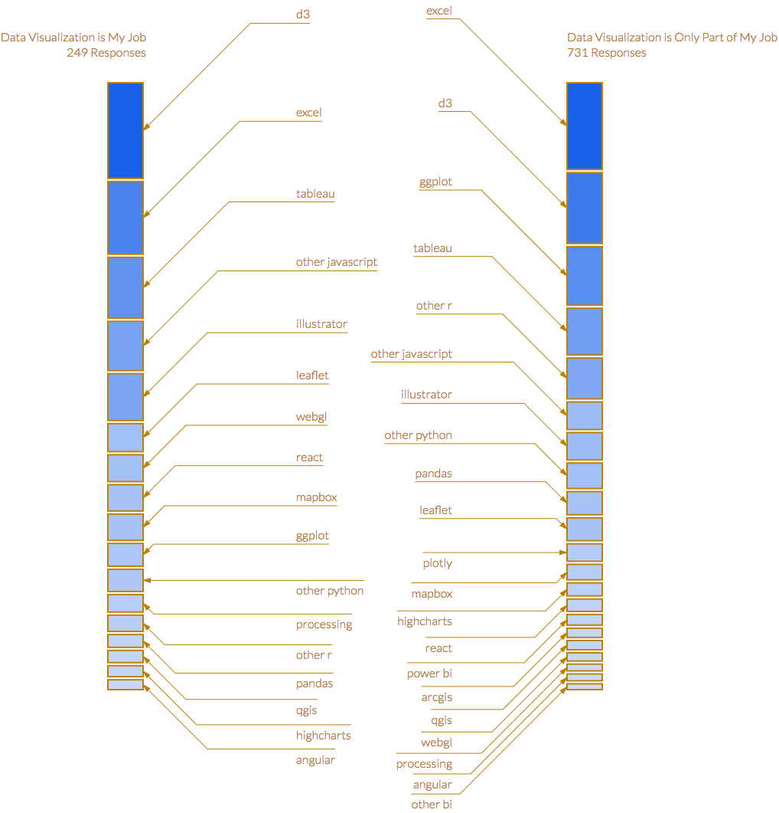
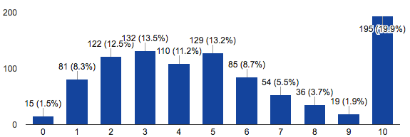

A few weeks back, spurred by a conversation about the state of data visualization in industry, some folks who do data visualization (myself included) put together a survey to find out what doing data visualization professionally meant. Through a series of 45 questions, the respondents identified, among other things: what were the job titles associated with doing data visualization, the tools, the thought leaders, the problems, and some sense of the demographics of the people in those roles. It was open for from February 27th to March 8th and 981 people responded. If you just want to see that data to visualize or analyze it, I put it on Github.
If you’re still reading, then maybe you’re looking for my own response to the results. So far, I don’t have one. I’ve read through them, in the process of cleaning them, but haven’t spent too much time analyzing the data. The point of the survey was to create a dataset so that we might together move beyond our intuitions about the shape and nature of the field (or even its existence) and base our understanding on data. It allows for a focus on professional data visualization that I haven’t seen before, such as the choice of tools and how that varies dramatically whether one identifies that role as being primarily focused on data visualization or not.

Though I’m happy with the number of respondents, I’m sure the results were skewed and I know the questions could have been better. The survey was legitimately criticized as being written for folks who weren’t consultants or freelancers, and the questions and answers (like whether you’re full time or a consultant, ugh, like you couldn’t be a full-time consultant?) could have been more clearly worded. I’m glad so many people put up with its shortcomings to answer a 45 question Google Survey.
One of the most interesting answers was to Are data visualization specialists represented in the leadership of your organization? which pretty clearly showed that this is not the case (75% responded “No”), along with the response to How many years have you been doing data visualization? that showed a definite bimodal distribution between people who have been doing data visualization professionally for a decade or more (20% of respondents) and a growing bulge around 4 years of experience reflecting the growing popularity of the field. Beyond that, the free text questions that deal with frustrations and advice, are probably a rich area to mine.

The free text questions were also some of the more problematic ones, as respondents struggled with the purpose of the generic job quality questions (meant to try to differentiate whether problems with doing data visualization were just generic or specific professional issues). Similarly, the demographic questions were sometimes seen as superficial or perhaps overly prying.
The next survey should really address the different kinds of visualization work being done and the different kinds of roles more systematically. We need to better differentiate between custom visualization and readymade visualization more meaningfully. Likewise, we need to differentiate between data visualization as a skill and data visualization as a professional role (and engage publicly in the currently private debate as to whether or not such a role really exists).
If you end up processing the data and producing supplementary datasets that you think are better suited for particular approaches, please feel free to file a pull request and I’ll add it to the repo.
Given that it’s a survey of the data visualization community, I suspect we’ll see some great data visualization of it and, not coincidentally, a better understanding of the practice and the field of data visualization.